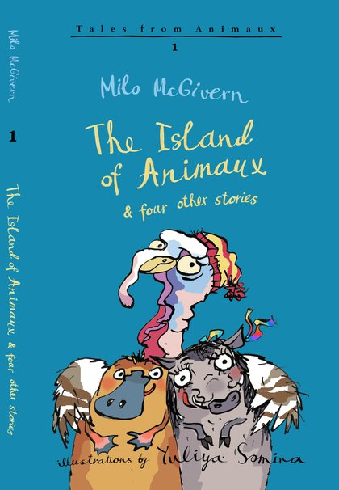
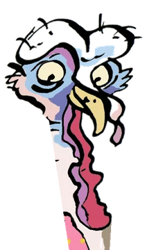
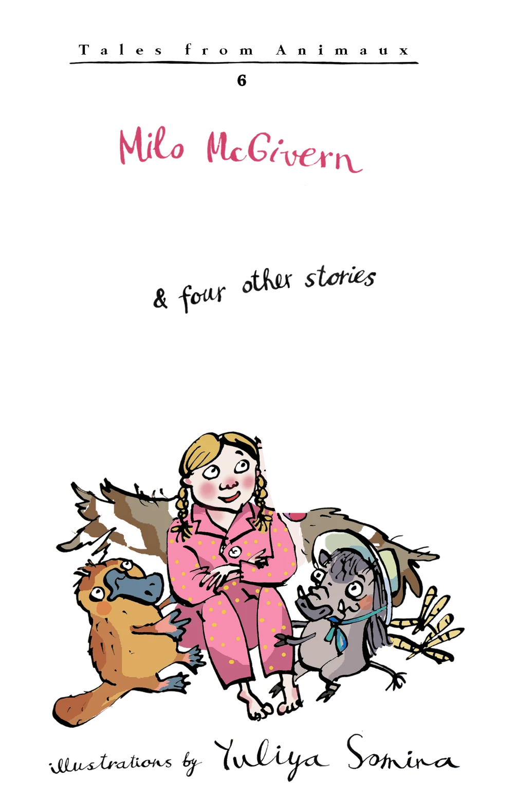
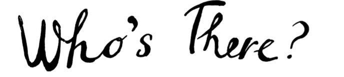
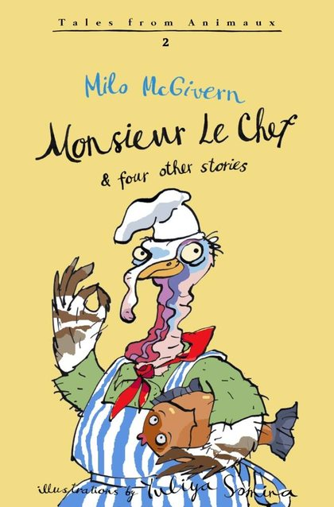
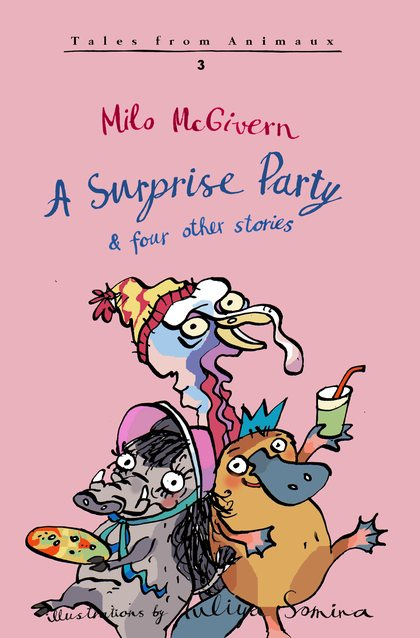
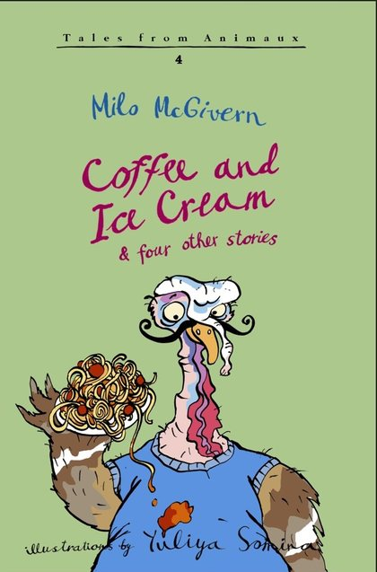
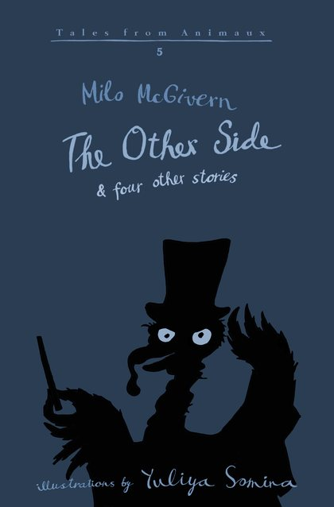
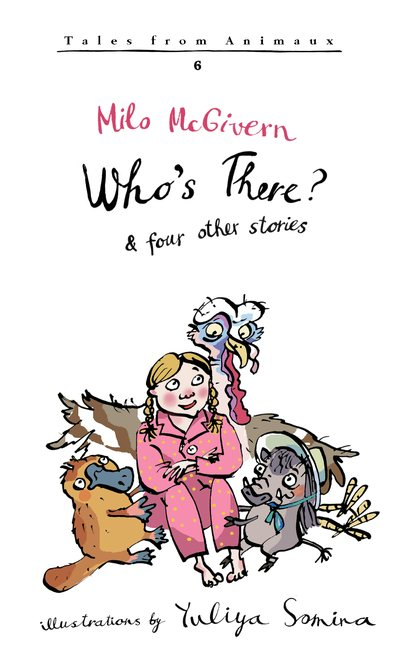
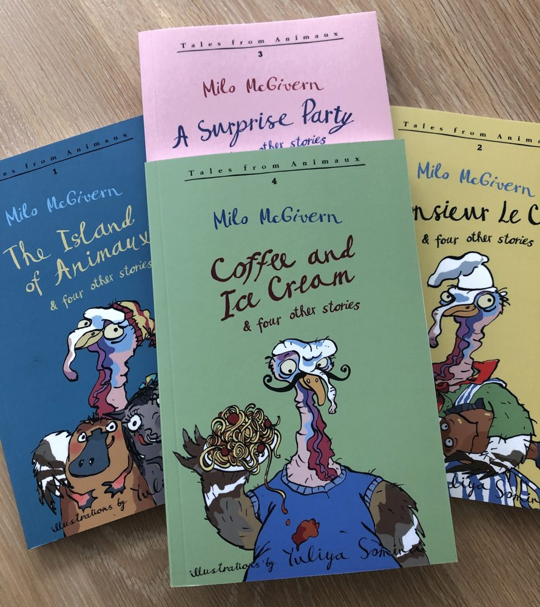

Who's There? by Milo McGivern, book 6 of the Tales from Animaux



Who's there?Keep scrolling. Someone is.
Aubrey. Of course.
Book 6 of the Tales from Animaux, out February 2026.
Buy from Milo
Six books, thirty tales
At the very edge of the world is the mysterious, undiscovered Island of Animaux, full of the strangest creatures having crazy, mad, funny adventures. Aubrey the Turkey plans his next dastardly scheme. Clifford Platypus and Walli Hog try to keep an eye on him. For readers aged 8 to 12, five tales in every book.

2
Monsieur Le Chef
More outrageous, hilarious tales of the scheming Aubrey and his despairing friends.
Signed copy

4
Coffee and Ice Cream
Trips to the moon, magic shows, swimming adventures and so much more.
Signed copy
5
The Other Side
The magical Island of Animaux returns, and Aubrey has a top hat and a wand.
Buy from Milo
new! 6
Who's There?
The latest five tales. More weird and wonderful adventures from the Island of Animaux.
Buy from MiloAubrey's diary
Aubrey keeps a diary on Milo's website. He is not a reliable narrator. A few real entries:
- Tuesday
- I saw on the Turkeynet that a people-creature called Milo has a new book out. And it's about this island and me! How is that possible? And where are my royalties?
- Monday
- I had acorns on toast for my breakfast and some gooseberry juice to wash it down. Delicious.
- Tuesday
- Where have my cowboy boots gone? I left them by the armchair and they have vanished. I bet Clifford has taken them. Naughty platypus.
- Sunday
- I'm such a handsome, clever turkey.

Signed, with a bookmark
"If you buy it from this site I will sign it and also add a very nice bookmark!"
That's Milo on his own shop page. Order there and he signs the book. The ebooks are on Amazon, Kobo and Barnes & Noble.
Go to the shopMilo
For the past five years Milo has been writing stories about an astonishing place at the edge of the world. Yuliya Somina draws them. Readers send in their own drawings of Clifford.
He calls himself a writer on a mission, and promises some darker, deadlier tales later on, and an introduction to the strange world of Spengle S.
Come and meet him
S19
Sunday 22 November, the Oxford Indie Book Fair, Examination Schools, High Street, Oxford.
"I am delighted to be returning to the Oxford Indie Book Fair and look forward to meeting you."